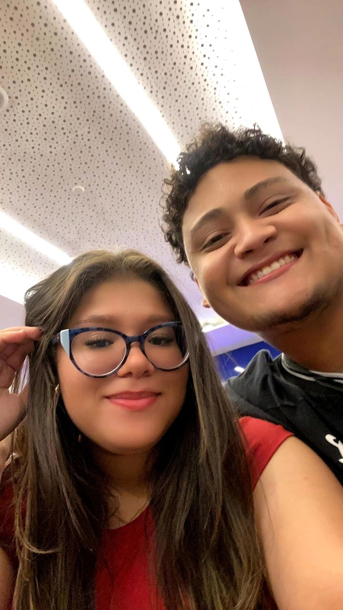

Oi :)
Prova de que você é linda usando matemática
1. Definição inicial:
Beleza é subjetiva, mas podemos concordar que "linda" é um atributo que reflete harmonia, equilíbrio e brilho.
2. Hipótese (H):
Thainá é linda.
H: Thainá = linda
3. Observações experimentais:
- Todo mundo que conhece Thainá afirma que ela é linda.
Isso nos dá evidências de que:
P(Thainá | linda) ≈ 1
4. Fórmula universal da beleza:
Beleza = √(carisma² + bondade² + simpatia²)
- De acordo com relatos, Thainá possui carisma infinito, bondade imensurável e simpatia infinita.
Substituímos os valores:
BelezaThainá = √(∞² + ∞² + ∞²)
BelezaThainá = ∞
5. Conclusão matemática:
Thainá é infinitamente linda, comprovado pela fórmula acima.
10 Coisas que Amo Fazer com Você
- 1 - Te abraçar
- 2 - Tirar fotos com você
- 3 - Sair com você para algum lugar grandioso
- 4 - Tomar um sorvete depois de trabalhar em Inoã kkkkkk quem lembra lembra
- 5 - Amo conversar com você
- 6 - Ir em um fast-food e me preocupar por você estar comendo cheddar kkkkkkk
- 7 - Quando você me pede sugestão para algo sobre sua vida
- 8 - Ir ao cinema com você
- 9 - Ah, correr na praia também foi muito bom, vai.
- 10 - Amo escrever coisas pra você, tá aí a prova.

Se lembra dessa foto?? Foi a primeira vez que a gnt saiu, esse dia foi maravilhoso kkkk, foi o dia que tudo começou.
acho que esse dia foi nosso melhor rolê, no qual mais nos divertimos, e também, foi seu dia mais bonita que eu te vi, não é atoa que me senti levemente atraído por você por uns segundos kkkkkkkkkk.
não poderia deixar de mencionar o dia do cinema que te peguei no flagra emocionada com o filme kkkkkkkk
tive que colocar uma zoada cara, até zoada fica bonita.
Bom dia, Thai! ☀️
Espero que você tenhaa dormido bem e que teu dia seja leve e tranquilo. Quero que tu lembre sempre o quanto você é especial. Sério, tua energia é única, você deixa tudo mais divertido e qualquer lugar fica melhor contigo por perto.
Você tem um jeito incrível de animar as pessoas, de fazer qualquer conversa ser legal e de transformar até os momentos simples em algo especial. Eu adoro estar contigo, dar risada, conversar sobre tudo e nada ao mesmo tempo.
Então, aproveita teu dia, faz o que te faz bem e, se precisar de qualquer coisa, tô aqui, beleza?